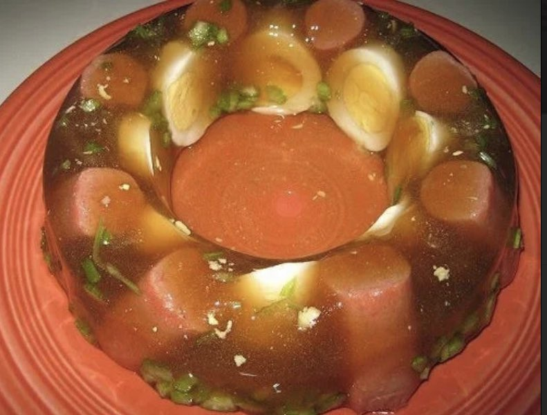

Beef Broth Gelatin with Hotdogs and Eggs

Homemade meal best served cold
Breakfast, lunch and dinner. Beef broth gelatin is a great meal choice no matter the time of day
Ingredients
- Homemade beef broth
- Hotdogs
- Eggs
- Seasoning(optional)
Instructions
- More on how to make broth gelatin
- Boil eggs for 5 mins after water has reach boiling point
- Cut 5-7 hotdogs into size big enough to fit your cake mold
- Pour broth gelatin into cake mold
- Place eggs and hotdogs into cake mold
- Place cake mold into freezer fpr approx. 20 minutes
- Enjoy your Beef broth gelatin with hotdogs and eggs